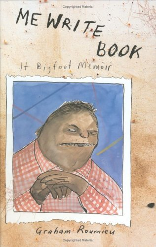

Blog & promocija knjige
torek, 4. september 2007. u 9:11 PM
Piše: La Lara
Rubrike: Creative Economy | Internet | Umetnost/Arts
Recimo da ja sad napišem knjigu. Trebalo bi je promovisati. Umesto da idem po seoskim domovima kulure, bibliotekama u unutrašnjosti, ili recimo u Studentski grad i Kolarac (pošto je u ovom smislu to sve isto, znam iz iskustva), i čak kad bi oni i hteli da me ugoste da pričamo gosti i ja kako mi je knjiga divna, ja ne bih. Umesto toga, pitala bih Makilicu, Red Sandru, EtoTako i druge blog drugare da mi pomognu. Pošto sam pročitala text u Njujork Tajmsu.
Jedan primer bloga specijalizovanog za promocije kniga je ovaj. I naziv je rečit: Pump Up Your Online Book Promotion.
Uglavnom, poenta je u tome da se umesto organizovanja promocija na nekom mestu, plaćanja zakupa, opreme i rizikovanja da sve prođe loše - npr. da niko ne dođe, autor organizuje svoju turu po blogovima. To može biti na različite načine - od gostujućih postova na blogovima ili davanja intervjua (mi smo npr. objavili intervju sa Franseskom Miraljesom), pravljenja podcasta, live chatova i slično. Sad, da li će vas blogeri sami pozvati ili ćete morati da se preporučite, pitanje je popularnosti pisca vs. bloga. U nekim slučajevima se gostovanje na blogovima i plaća ali, navodi NYT, to se ne obznanjuje baš često. Krajnji cilj je što veći broj poseta zvaničnom sajtu samog pisca ili, još bolje, Amazonu, i naručivanje knjige.
***
Kod nas su pisci uglavnom prisutni na B92 blogu, kao autori ili komentatori drugih tamošnjih blogera.
Što se tiče opšteg online prezentovanja, random check pokazuje da neki od najpoznatijih autora imaju svoje sajtove. (A neki od najpoznatijih, opet, nemaju.)
Kvalitet tih sajtova je, međutim, vrlo raznolik - od modernog web postojanja Srđana Tešina do mesta za plašenje male i velike dece. A tu su i Milorad Pavić, Marko Vidojković, Zoran Živković i još neki. Ovdašnja štampa se bavi povremeno piscima (i uopšte umetnicima) i njihovim prisustvom na internetu, ali to se većinom svodi na blagu iznenađenost da su se, eto, neki od stvaralaca dosetili da ima i taj web.
Da li smo iznenađeni, nismo, da li to može drugačije, naravno. Samo da još napišemo te knjige.
 RSS feed
RSS feed
 sadržaji se objavljuju pod
sadržaji se objavljuju pod
Komentari
Mogu li ja korice da uradim :) U tome sam bolja. Sigurno.
Generalno, sve više recenzija se obavlja putem bloga. Sajtova. Iskreno. Ne sećam se kad sam čitala kritiku ili najavu za nešto i što bi se reklo tiskanom izdanju.
etotako | 04.09.07 14:03
Mozes! Nego, da, naravno da se prikazuje i pise po netu i blogovima, ali nisu pisci ili izdavaci ukljuceni aktivno u to, vec pojedinci ili mediji pisu po svom izboru i nahodjenju
La Lara | 04.09.07 14:07
Jao, kako sam se uplasila! Sledeci put kad stavis link za mesto za plasenje, upozori. Navedi nivo strahote, nisam bila spremna na ovo!
Fiesty | 04.09.07 18:07
:))) Sad si ti mene zasmejala
la lara | 04.09.07 18:47
Stvarno je scary Habjanovićka. Baš me zanima koliko pisci plaćaju blogerima da se pojave.
elektrokuhinja | 05.09.07 06:00
Samo ti napiši knjigu (ili biografiju) a reklamu na teritoriji Švajcarske zagarantovano imaš. :-)
Mislim da pisci ne plaćaju blogerima za reklamu i da se upravo radi o tome da se reklama preko blogova još uvek ne shvata ozbiljno. Tekst iz NYT je baš cool.
Maja | 05.09.07 08:59
Ako mogu trgovci na ulici da naprave svoj cenovnik i trziste, mogu i blogeri, ako ima klijenata, to ce raditi, ako nema nece, a i to ce se menjati kroz vreme i tako, sve zavisi od ljudi, jel'...Ne znam koju knjigu da napisem, to mi je problem.
La Lara | 05.09.07 10:12
hahahaha stvarno strashi LJHDj, podsetila me stranica na nadgrobne ploche
Koju knjigu? Ja volim nachin na koji ti pishesh,a i zanimljiva su mi ova istraživanja i izlaganja, o medijima. Mozhda o odnosu medija i ljudi. Mozhda bash Interneta. Mozhda njihova upotreba u Srbiji sada. A mozhda da sakupish sve ovo shto si pisala na Yahtici, mislim da i jeste pod Internet.)
redsandra | 05.09.07 16:04
Bravo Sandra, super ideje
la lara | 05.09.07 17:39
Pa da, lepo reče Sandra, zbirka postova sa Yahti i Vijugija, to bi bilo super. :-)
Maja | 07.09.07 15:18
Pozdrav svima,
Pratim ovaj post od prvog dana (uočih ga preko incoming links na blogu Srđana V. Tešina). Kao urednik i administrator Tešinovog promotivnog bloga / sajta mogu da kažem da sam veoma zadovoljan feedbackom.
Prvo i osnovno što se tiče promocije na mreži je danonoćno surfovanje.Drugo, biranje pravog trenutka za početak rada. Neposredni povod za pokretanje bloga je bilo objavljivanje nove knjige, a blog je dobio naslov po novoj knjizi.
Ako uzmemo u obzir da je do početka web promocije SVT bio pisac koji je u trci za NINovu nagradu dao najviše intervjua regionalnim medijima, imali smo znatno olakšan posao. Znači, pisac mora da ima recepciju i reakciju.
Ako neko želi da kontaktira povodom ovih aktivnosti, neka zamoli administratora Yahti-ja da mu prosledu moj mail, pa se kuckamo ;
Premijerna najava samo za Yahti.com:
Promotivni sajt Dejana Ognjanovića (pisca, najboljeg srpskog poznavaoca horor žanra, prevodioca, kritičara...)
(Još nedefinisan projekat) Slobodana Vladušića - kritičara žirija NINove nagrade.
Pozdrav svima, odlična tema!
Miloš Krneta | 18.11.07 08:43